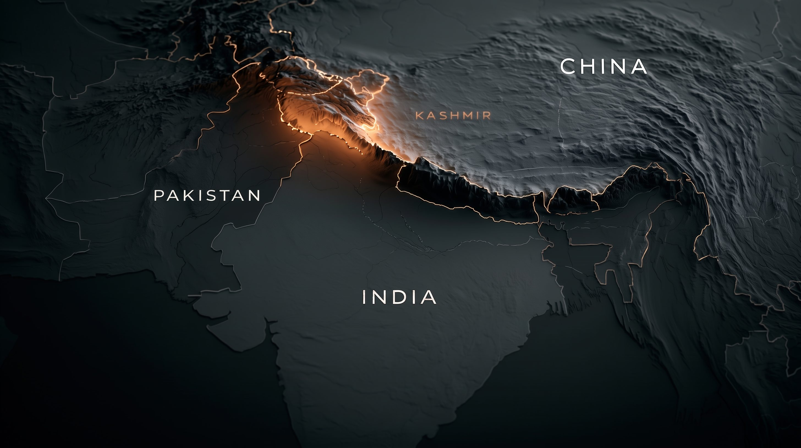
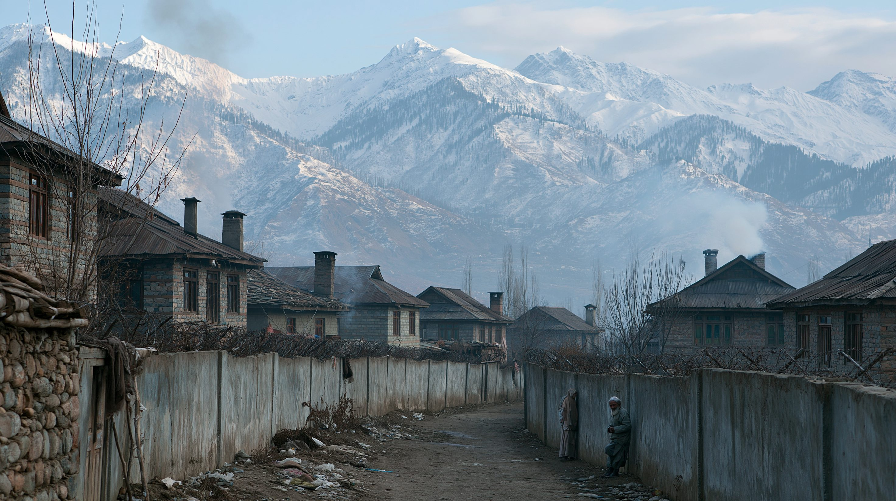
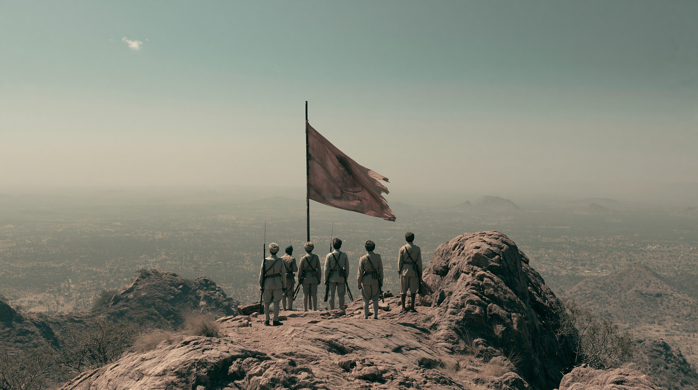
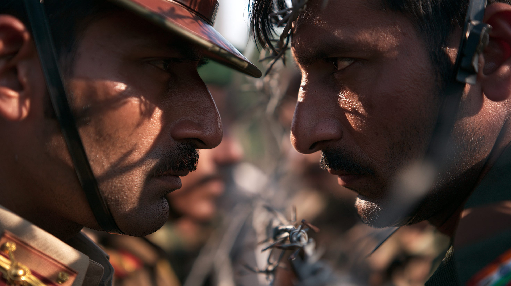
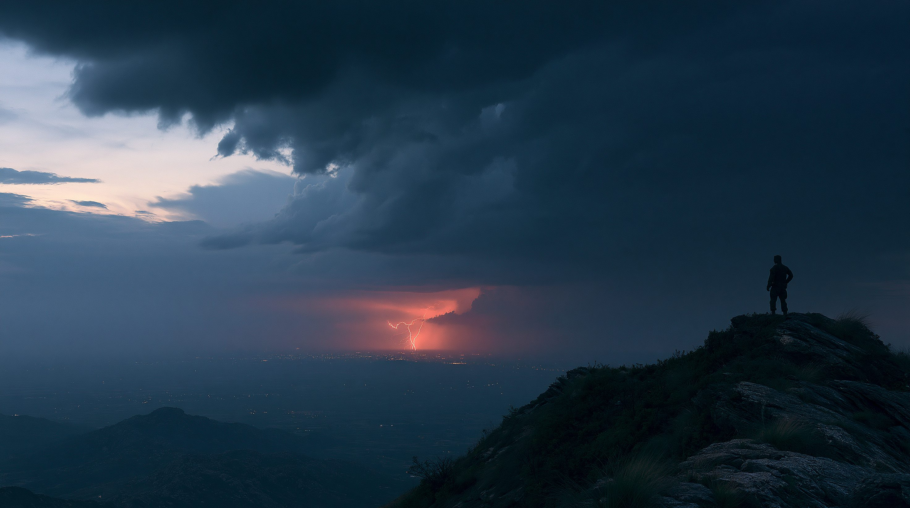

01核心と問い — 70年の分断

カシミールはインド・パキスタン・中国の3カ国の国境が収束する地点に位置する。インドとパキスタンは実効支配線（LoC）を挟んで領有権を争い、中国は東部のアクサイチンを実効支配している。※イメージ画像（生成AI）
3度の戦争を戦い、互いに核を向け合う2つの国の境界線——カシミール。なぜここで対立は70年以上も終わらないのか。2025年の4日間の衝突を経て、印パは破局へ向かうのか、それとも危うい均衡を保ち続けるのか。
インドとパキスタンの対立は、領土・宗教・水・経済・核——あらゆる火種が一本の境界線に集約されているという意味で、世界でも例のない複雑さを持つ。2025年4月のパハルガム襲撃と続く軍事衝突は、その対立が「過去の問題」ではなく今も現在進行形であることを突きつけた。核を持った2つの国が、なぜ70年たっても折り合えないのか。その答えは、独立分割の傷・水の依存・大国の介入という、3つの絡み合った構造の中にある。
3つの論点
領土 — 70年の未解決
1947年の分離独立で生まれた領土問題は、3度の戦争でも解決しなかった。実効支配線（LoC＝Line of Control）を挟んで両国が領有を主張し、住民の意思は問われないまま分断が続く。
核抑止 — 最後の保険
両国は1998年に相次いで核実験を行い、以後は「核を撃てば終わり」という認識が全面戦争を抑える。だがその「天井」の下では、空爆や代理戦争という限定衝突が繰り返し起きている。
水と経済 — 非対称な対立
パキスタン農業の8割以上が依存するインダス水系は、上流国インドの手にある。GDPの差は約11倍。圧倒的に不利なパキスタンにとって、核と中国だけが対等を保つ手段になっている。
用語解説
インダス水条約（1960年）
世界銀行の仲介でインドとパキスタンが締結した水利条約。インダス川水系の6支流を東西に分割し、東の3支流（ラービー・ビアース・サトレジ）をインド、西の3支流（インダス・ジェルム・チェナーブ）をパキスタンに配分する。パキスタン農業の水需要の8割以上がこの西側の配分に依存しており、3度の戦争を経ても効力を維持してきた。2025年4月のパハルガム襲撃後、インドが「保留（abeyance）」を宣言し、初めて外交カードとして行使された。

カシミールは1947年以来、印パが領有を主張し続ける土地だ。実効支配線は山岳地帯を蛇行し、家族・村・宗教共同体を分断したまま70年が過ぎた。住民の意思は、いまも国家間の論理の前で後回しにされている。※イメージ画像（生成AI）
02タイムライン — 70年の対立と4日間の衝突
1947年
分離独立とカシミールをめぐる第一次戦争
英領インドが宗教を基準にインドとパキスタンに分割され、数十万人が犠牲となる大移動が起きた。藩王が独立かインド帰属かを決めかねていたカシミールで第一次印パ戦争が勃発し、領土問題の原型ができあがった。
宗教を基準にした分割
カシミール紛争の原点
1971年
バングラデシュ独立戦争 — パキスタンの分裂
1947年の建国当初、パキスタンはインド領を挟んで東西2地域に分かれており、人口では東パキスタンが西を上回っていた。インドが東パキスタンの独立を軍事支援してバングラデシュが誕生すると、パキスタンはその東半分——国土面積の約半分と人口の過半——を一挙に失い、圧倒的な劣勢を抱えたまま核開発に踏み込んでいく。
パキスタンが国土の半分を喪失
核開発への決定打
1998年
両国が相次いで核実験
5月、インドが5回の核実験を実施し、その2週間後にパキスタンも6回の核実験で応じた。南アジアは「核保有国同士が国境を接する」世界で唯一の地域となり、地域の戦略環境は一変した。
南アジアの核時代到来
国際社会から制裁を受ける
1999年
カルギル戦争 — 核保有後初の本格衝突
パキスタン軍と武装勢力がインド側カシミールのカルギルに侵入し、両国軍が直接交戦した。核戦争への発展を恐れたアメリカが介入し、パキスタンが撤退する形で収束。「核の天井の下で在来戦争が起きる」構図が定着した。
核抑止下での限定戦争
米国の仲介で収束
2019年
プルワマ襲撃・バラコート空爆と特別自治権剥奪
カシミール武装勢力の襲撃にインドが報復空爆で応じ、両国の戦闘機が交戦した。同年8月、モディ政権はインド側カシミールの特別自治権を一方的に剥奪し、自治の枠組みを根本から書き換えた。
越境空爆という前例
カシミール自治権の終焉
2025年4月
パハルガム襲撃と「インダス水条約」保留
パハルガムで観光客26人が殺害され、TRFが犯行声明を出した。インドは翌日、1960年に締結されたインダス水条約を「保留（abeyance）」し、パキスタン農業の生命線である水資源を初めて外交カードに使った。
観光客への大規模テロ
水を「武器」化
2025年5月
シンドゥール作戦 — 4日間の衝突と停戦
5月7日深夜、インド空軍がパキスタン本土とパキスタン側カシミールの9カ所を空爆した。両国は4日間にわたりミサイルとドローンを撃ち合い、5月10日に停戦合意。米トランプ政権が「仲介」を主張したがインドは即座に否定した。
核保有国同士の本格交戦
米国の仲介をめぐる火種
2026年5〜6月
水条約の仲裁判決とパキスタン側カシミール抗議
仲裁裁判所がインダス水条約に関しパキスタン寄りの判決を出したが、インドは「不法な裁判所」として拒否。同時期、パキスタン側カシミールで難民議席をめぐる抗議行動が警察と衝突し11人が死亡、対立は政府間だけでなく住民レベルにも広がった。
仲裁判決を印が拒否
住民レベルの不安定化

1947年の分離独立から70年——3度の戦争、核実験、空爆、そしてシンドゥール作戦。世代を超えて同じ国境を巡る対立が繰り返され、新しい兵器と新しい指導者のもとで、古い火種が何度も発火している。※イメージ画像（生成AI）
036つの視点
「テロには断固たる軍事報復で応える。これがインドの新しい常態だ」
報復ドクトリンの常態化
モディ政権は、テロ攻撃には越境空爆で報復するという姿勢を固めた。2019年のバラコート、2025年のシンドゥール作戦と、報復は二度目以降は「例外」ではなく「規則」になっている。核の天井下での懲罰的攻撃を、ためらいなく選択する政治体質が定着した。
水と軍事力で圧迫
インダス水条約を保留し、パキスタン経済の生命線である水資源を交渉カードにした。同時に Agni-5 ミサイルへの MIRV（多弾頭独立目標再突入弾）搭載や弾道ミサイル原潜の就役で核戦力を増強。対象にはパキスタンだけでなく、長期的には中国も視野に入れている。
「核と中国だけが、圧倒的に不利な現実を支えている」
非対称性を補う核抑止
経済規模で約11倍、軍事費でも大きく劣るパキスタンにとって、核戦力は唯一の対等性の担保だ。「即時かつ大規模報復」という核ドクトリンと戦術核を組み合わせ、インドの在来戦力優位を相殺する。SLBM（潜水艦発射弾道ミサイル）を持たないため第二撃能力に弱点を抱えるが、それを「敷居の低さ」で補おうとしている。
経済難と中国依存
IMF支援下の財政・通貨危機が常態化し、政治は軍部と文民政府の綱引きが続く。中国との「全天候型」パートナーシップと中パ経済回廊（CPEC＝中国・パキスタン経済回廊）に経済の活路を求め、対インド外交でも中国の後ろ盾を頼りにせざるを得ない構造になっている。
「パキスタンの安定はわが国の戦略的利益であり、決して譲れない」
パキスタンを通じてインドを牽制
中国は1990年代からパキスタンに核・ミサイル技術を供与し、国境紛争を抱えるインドを地政学的に挟撃する形を整えてきた。2026年で印中国交75周年を迎えるが、パキスタンへの「全天候型」支援姿勢に変化はない。インドの大国化を「単独で抑え込む」のではなく、パキスタンと連動させて足止めする戦略だ。
CPEC 2.0と地経学的浸透
CPEC は港湾・道路・電力・産業団地を巻き込んだ巨大投資で、2026年には第2フェーズの加速が確認された。中国はパキスタンを軍事同盟国ではなく経済的にも不可逆な依存関係に組み込み、南アジアでのプレゼンスを物理的に固めようとしている。
「印中対抗ではインドが要だが、印パ仲介の手柄も欲しい」
「再ハイフン化」を嫌うインド
アメリカは長期的にはインド重視で、中国に対抗する戦略的パートナーと位置づけている。だが2025年5月の停戦をトランプ大統領が「自分の仲介で実現した」と繰り返し公言したことで、モディ政権は強く反発。インドが避けてきた「印パを並列に扱われる」状態（再ハイフン化）への警戒が深まっている。
関与の浅さがもたらすリスク
バンス副大統領が当初「われわれの問題ではない」と発言した直後にトランプ大統領が仲介を主張するなど、米政権内の足並みは揃わなかった。介入の意思と実力が一致しないまま「手柄」だけ取りに行く姿勢は、印パいずれの信頼も失いかねず、危機の際の調停力を削いでいる。
「私たちは70年、誰のものかを決められる側ではなかった」
消された自決権
1948年の国連決議は「住民投票で帰属を決める」と定めたが、ついに実施されなかった。インド側カシミールでは2019年の特別自治権剥奪以降、政治活動と表現の自由が大きく制限され、パキスタン側でも2026年6月の抗議で11人が死亡するなど、両側で住民の声が抑え込まれている。
軍事化のなかでの日常
実効支配線の両側には世界有数の密度で軍が展開され、人口比あたりの兵力では世界屈指の軍事化地域となっている。観光・経済は政情で揺れ、若年層の失業率は高い。70年の対立の代償は、最終的には軍人ではなく、ここに生まれ育った人々が支払い続けている。
「南アジアは、いまも『世界で最も核戦争に近い場所』だ」
エスカレーション制御の脆弱化
2025年のシンドゥール作戦は、空爆・ミサイル・ドローンが一気に飛び交う「4日間で核保有国がここまで行く」事例となった。両国の指導者と司令系統がエスカレーションを制御できる時間と情報の余裕は、戦闘テンポの高速化により以前より明らかに短くなっている。
抑止の論理の劣化
インドは MIRV化・原潜・長距離ミサイルでより柔軟で攻撃的な核戦力に進化し、パキスタンは戦術核と早期発射ドクトリンで対抗する。「使われない核」を保つはずの抑止の論理が、技術と教義の両面で複雑化し、誤算・誤認・先制衝動のリスクが上がっている。
| 立場 |
基本スタンス |
最大の主張 |
課題・懸念 |
| インド | 強硬・大国化 | テロには軍事報復が新常態 | 中国も視野に核戦力を拡張 |
| パキスタン | 核抑止と中国依存 | 非対称性を核と同盟で補う | 経済難・第二撃能力の弱さ |
| 中国 | 「全天候型」同盟 | パキスタンを通じインド牽制 | 地域不安定化のコスト |
| アメリカ | 仲介と利用の混在 | 印中対抗でインド重視 | 「再ハイフン化」で印の信頼失う |
| カシミール住民 | 自決権の主張 | 住民投票の約束は果たされず | 両側で声が抑え込まれる |
| 核拡散専門家 | リスクの可視化 | 世界で最も核戦争に近い場所 | エスカレーション制御の劣化 |

国境ゲートでの儀礼的対峙は、両国関係を象徴する光景でもある。整然とした足踏みの裏にあるのは、70年積み重なった不信と、押し殺された緊張だ。形式化された敵意のなかで、それぞれの兵士はそれぞれの国家を背負って立つ。※イメージ画像（生成AI）
04データ・統計
軍事力の比較（核弾頭・兵力・国防予算）
核弾頭数はほぼ拮抗するが、現役兵力と国防予算はインドが大きくリード。パキスタンは「量より核」で非対称性を補う構造。出典：SIPRI、IISS、各種推計
経済規模の比較（2026年）
名目GDPは約11倍の格差。一人あたりGDPでもインドが大きくリード。経済力の非対称が、対立の構造を歪める根本要因。出典：IMF World Economic Outlook、世界銀行
印パが経験した主要な軍事衝突
| 年 |
概要 |
期間 |
| 1947–48 |
第一次印パ戦争。国連停戦で実効支配線（LoC）が生まれ、カシミール問題の原型が固まる |
約1年半 |
| 1965 |
第二次印パ戦争。カシミール奪還を狙ったパキスタン軍が侵入、引き分けのまま国連停戦 |
17日間 |
| 1971 |
バングラデシュ独立戦争。インドの軍事介入でパキスタンが東半分を喪失、以後の核開発へ直結 |
13日間 |
| 1999 |
カルギル戦争。核保有後初の本格衝突。米国仲介でパキスタンが撤退し「核の天井」構図が定着 |
約2か月 |
| 2025 |
シンドゥール作戦。核保有国同士がミサイル・ドローンを撃ち合い、米仲介で停戦 |
4日間 |
回を追うごとに期間は短くなるが、兵器の高度化と核リスクは上がり続けている。出典：各種戦史資料
注目の数字
4日間
2025年のシンドゥール作戦と停戦までの日数
05深掘り — これから2〜3年で何が起きるか
2025年の衝突は、印パ関係を「危機の前」と「危機の後」に区切る分水嶺になった。報復ドクトリン・水・大国の介入・核——4つの軸で、今後2〜3年の見通しを整理する。
報復ドクトリンの予測 — 「シンドゥール」は例外でなく規則になる
インドは「テロには越境空爆」という選択肢を、2019年に続いて2025年も実行した。三度目以降は「常態化」と呼ぶしかない段階に入る。今後2〜3年でカシミール側で大規模なテロが起きた場合、インドはほぼ自動的に空爆で応じるだろう。問題は、その応酬が4日間で止まる保証がだんだん弱くなっていることだ。前回の停戦は米国の介入と双方の偶然の自制で成立したが、次も同じ条件がそろうとは限らない。
インダス水条約の予測 — 仲裁と二国間のどちらに収束するか
インダス水条約はインドが「保留」を続けるなか、仲裁裁判所はパキスタン寄りの判決を出している。だがインドは判決を「不法」として拒否し、現状は「条約は紙の上で生きているが、現実には機能していない」状態だ。今後2〜3年で焦点になるのは、インドがダム建設や流量変更でどこまで実質的に水を絞れるか、そしてパキスタンが「水は戦争の理由になる」と公言したラインをどこに引くかだ。水の争いは、核とは別の経路で本格衝突を引き起こすリスクを孕む。
米中介入の予測 — インドの「再ハイフン化」拒否と中国の地経学的深入り
アメリカは印中対抗ではインドを必要としているが、トランプ政権は「印パ仲介」のクレジットを取りたがり、両者の信頼を消耗させている。中国は逆に、CPEC 2.0で経済的にパキスタンに深く食い込み、軍事だけでなくインフラの「全方位」で関与を強める。結果として、印パ危機の調停役は不在のまま、外部からの圧力と支援が逆方向に働く危うい構図が固まりつつある。
核エスカレーションの予測 — レッドラインは曖昧化する
インドの MIRV 化・原潜・長距離ミサイル、パキスタンの戦術核と早期発射ドクトリン——両国の核戦力は「使われないための核」から「使えなくはない核」に向けて少しずつ進化している。明確だった核使用のレッドラインは、双方で曖昧化しつつある。今後2〜3年で最大のリスクは、政治的危機が在来戦に発展した瞬間、相手の核ドクトリンを誤読した側が「先制せざるを得ない」と判断することだ。技術の進歩が、皮肉にも抑止の論理を壊す可能性がある。
印パの対立は、領土・宗教・水・経済・核がすべて絡み合った、世界でも例のない複合危機だ。70年たっても解けない理由は、どこかの段階で対話が一度切れて、双方が「相手を変えるより、自分が強くなる」道を選び続けてきたからにほかならない。
核時代の南アジアが「危うい均衡」を保てるかは、印パの政治家、米中の介入、そして忘れられがちなカシミール住民の声を、誰がどう束ね直せるかにかかっている。氷の溶けた北極が「協力の海」になれるかと同じ問いが、火の絶えない南アジアの国境でも問われ続けている。

核を持った2つの国の境界線——その先にあるのは、危うい均衡か、それとも制御できない衝突か。技術の進歩と政治の硬直が同時に進むなか、南アジアは「使われない核」と「終わらない国境」のあいだで、なお揺れている。※イメージ画像（生成AI）
06情報源・参考メディア
CSIS — What Led to the Recent Crisis Between India and Pakistan?
パハルガム襲撃から停戦までの経緯、米中の関与、地域への含意の包括分析。
【戦略国際問題研究所（米）】
Stimson Center — Four Days in May: The India-Pakistan Crisis of 2025
シンドゥール作戦・停戦・エスカレーション制御の専門分析。南アジア戦略研究の第一線。
【スティムソン・センター（米）】
Carnegie Endowment — A Quarter Century of Nuclear South Asia
核保有25年の南アジアにおける危機・シグナリング・エスカレーションリスクの長期分析。
【カーネギー国際平和財団】
Atlantic Council — Experts React: India just launched airstrikes against Pakistan
複数地域専門家による即時分析。米英欧の政策実務家視点からの危機評価。
【大西洋評議会（米）】
International Crisis Group — India-Pakistan (Kashmir)
カシミール紛争の現地動向・住民影響・武装組織情勢の継続的モニタリング。
【国際危機グループ】
Chatham House / Bulletin of the Atomic Scientists
水条約再交渉の見通し、核ドクトリンの実証分析、抑止の論理に関する査読系の議論。
【英王立国際問題研究所・米科学者会報】